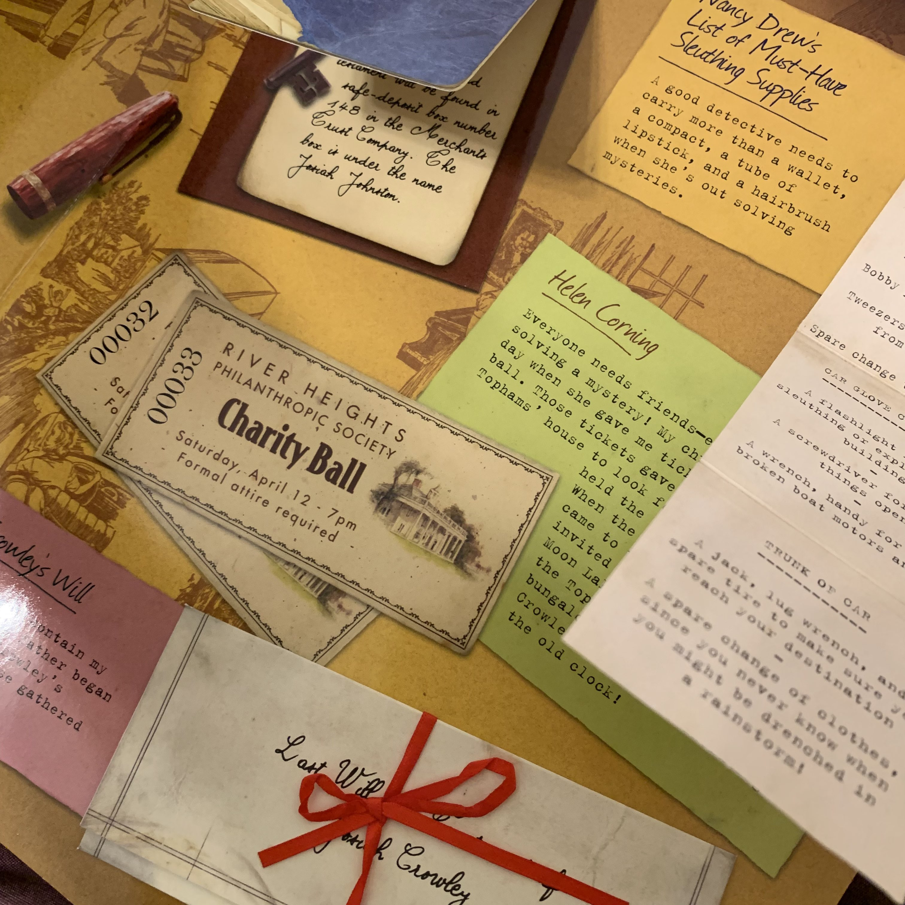

After reading the article Game Design UX Best Practices, I learned a bunch of cool (cool? slightly predatory?) UI/UX choices for game design. For example, I never knew about the right-side rule with button choices. That makes a lot of sense. Also, I noticed the article mentioned rewarded-video ads. The practices associated with them makes sense, but also... from a player perspective, including ad rewards in the first place cheapens the feel of the game. At least, it depends on the type of game. Ads are a given for kids' games and casual/puzzle games. Uhhh this has nothing to do with UI/UX.
Finally, I noticed a lot of the examples are mobile/"freemium" games. I wonder how many of the practices mentioned in this article still apply to paid games. It's also a little wild to see mainly kids' games in the examples. Kids are the kingdom keys to the wallets of parents... I guess. Feels a little skeevy but... that's a discussion for another time.
Thoughts on Photographs

Callia Tang, 2023.
This image is interesting because at first, it looks like a page with a bunch of different printed shapes on it. But if you look at it a little longer, you can see that not every shape on there is directly printed on the page. Some of them pop out of the page, and some are actually tied down to it (check the ribbon!). It gives the photo more texture.
This image relates to my topic because my topic is about my collection of interactive children's books. Small interactions like pop-ups or a tied ribbon to unwrap are what make these books so fun and precious to me.
My archive says that as a person I am... still a kid at heart. But it ALSO says that as a designer, I greatly value making user experiences as fun as they can be. Not everything can be fun, but not actively searching for opportunities to make the user smile is killjoy behavior. Whether it's funny flavor text that you'd notice on the second read, or a giant pop-up treehouse, or a secret note hidden under a flap, there are so many ways to make an experience all the more interesting.
Anna Zhao, 2023.
This image is about a place Anna visited on her road trip. It looks like a forest trail.
The most interesting aspects of this image are how the trees frame the shot. Their tall shapes wrapping around the edge of the image force the viewer to focus what's beyond them, such as the river or the vast forest on the other side of the river. There are a lot of rich greens and blues, a sign that the plants here are well-hydrated. The total lack of humans, animals, or human objects give the image a sense of isolation, but the bright colors balance that out with a sense of peace and happiness. :D
The most obvious aspect of the image is how clear it is, meaning Anna had to have stopped at this location to take the photo. What's mysterious is the context of the photo, as well as why she took it. Was she on a hike? A boating trip? A swim? Camping? Since there are no visible materials/people in there, it's all left to interpretation. Why did she take the photo? Did this spot have emotional/sentimental value to her? Did she think this specific view looked especially pretty? Was there anyone else present when she took the photo? Did she go off on her own to take it?
Thoughts on Photographs
Recently read 10 Intriguing Photographs to Teach Close Reading and Visual Thinking Skills from the New York Times. I had no idea what visual thinking was for a good minute or two--until I read the article and realized this was the stuff they hammered into us during AP history classes. Can you say, "political cartoons"? Anyway, the images included in the article were a nice thought exercise for your analysis skills. Image 1 was one of my favorites, it looked like a race to me because of the variety of vehicles and the lack of traditionally paved roads.
A website I thought did a cool job with images and interaction is the One Day in My World project, which is actually about telling the stories of a variety of communities through images. The more you scroll, the more you learn about these different groups and the issues they face in the world--you spend in time in "their world".
Thoughts on Overlays
Just read the Medium article Best Practices for Modals / Overlays / Dialog Windows. It brought up a lot of points on pop-ups that I agree with, like how annoying pop-ups can be on mobile, or how difficult they can be for users that use screen magnifiers. But despite their annoyances, they feel so clean and sophisticated compared to going through the effort to open a whole new page. But it also raises the question of whether pop-ups/overlays/etc are really needed, especially if the user is going to close them anyway. If anything, I guess modals are best used when the user intends for them to pop-up, like when a modal prompting you to login appears after you click, well, "log in".
Thoughts on Form Design
Recently, I had the opportunity to read the article Best Practices for Form Design on Medium. I thought the article brought up a lot of valid points when it comes to good form design. Forms are never fun to fill out, and I never noticed how much I disliked having to constantly with options that should really be one-click only. The article also brings up a lot of new ideas for me, such as the absence of negative messages (avoiding "you" statements that blame the user), or getting rid of the reset button to avoid confusing (and frustrating) users.
On that note, a website form that I think exemplifies the best practices described in the article would be the account creation form for the FAFSA site. It does a good job of dividing the creation process into digestible chunks, and includes help buttons on what the user should fill out the form with. The actual FAFSA aid application also does something similar.